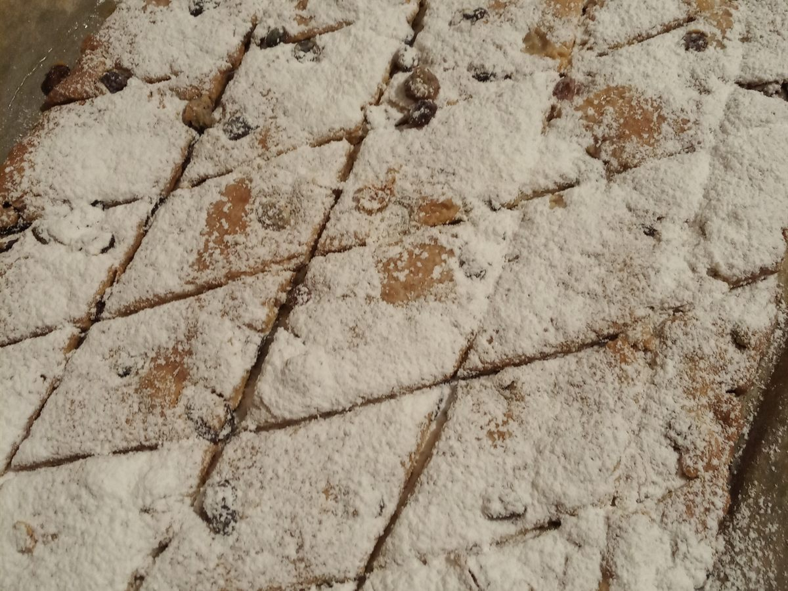

🍪 Итальянские мини-штоллены
Пряные печенья с сухофруктами, цедрой апельсина и специями. Тесто получается мягким и пластичным, а готовое печенье можно дать настояться для более насыщенного вкуса.

Ингредиенты
| Ингредиент | Количество |
|---|---|
| Мягкое сливочное масло | 100 г |
| Сахар | 75 г |
| Сухофрукты, замоченные в коньяке или роме | 150 г |
| Разрыхлитель | 2 ч. л. |
| Творог или рикотта | 150 г |
| Мука | 150–300 г (зависит от влажности творога) |
| Корица | 1/2 ч. л. |
| Кардамон | 1/2 ч. л. |
| Мускатный орех | щепотка |
| Цедра апельсина | с 1 апельсина |
| Сливочное масло для смазывания | 50 г |
| Сахарная пудра | по вкусу |
Вместо корицы, кардамона и мускатного ореха можно взять 1 ч. л. готовой смеси для пряников.
Приготовление
- Взбить мягкое масло и сахар до растворения сахара.
- Добавить творог, цедру и специи. Перемешать.
- Ввести разрыхлитель и муку. Тесто должно получиться мягким, пластичным и не липнуть к рукам.
- Добавить сухофрукты, при желании — орехи. Вымесить тесто.
- Раскатать тесто на пергаменте и нарезать квадратиками или ромбиками.
- Выпекать при 180 °C до слегка золотистого цвета. Время зависит от духовки и влажности творога.
- Остывшее печенье убрать «настояться» на 2–3 дня или до месяца.
Лайфхак: ткань (бязь, лён или марлю) нужно увлажнить коньяком, но так, чтобы с неё не капало. Контейнер выстелить пергаментом, положить ткань, затем печенье. Сверху накрыть тканью и пергаментом, закрыть крышкой. Остаётся спрятать контейнер и тренировать силу воли.